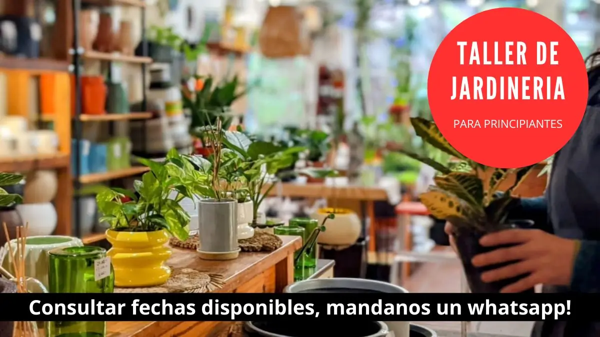

Para principiantes
Si te encantan las plantas pero no sabés cuidarlas, éste es el taller para vos. Qué hay que tener en cuenta al momento de comprarlas. Iluminación, riego, plagas. Cuándo se fertilizan? Todos los tips
Llevate toda la información necesaria para cuidar tus plantas, hacerlas crecer y mantenerlas sanas y hermosas.